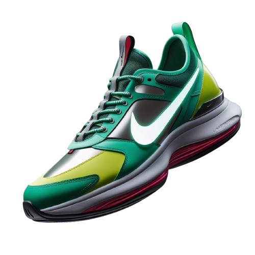

Classic Spot
Airmax 90
Designed for walking in ultimate comfort, the Nike Motiva provides our highest level of cushioning. A tall foam stack is combined with our Comfortgroove innovation on the outsole to absorb the bumps along the way. And its exaggerated rocker helps propel you forwards.
Classic Spot
Designed for walking in ultimate comfort, the Nike Motiva provides our highest level of cushioning. A tall foam stack is combined with our Comfortgroove innovation on the outsole to absorb the bumps along the way. And its exaggerated rocker helps propel you forwards.
Color Shown
yellow
orange
Style
DV1237-403
Region of Origin
Vietnam
Standard delivey
4–9 business days
Net Quantity
1 Pair

Women's Shoes
NikeCourt Legacy Canvas
Honouring a history rooted in tennis culture, the NikeCourt Legacy Canvas brings you a classic in a modern, street-worthy design. Made from durable canvas and featuring heritage stitching and a retro Swoosh design, it lets you blend sport and fashion.
Classic Spot
Honouring a history rooted in tennis culture, the NikeCourt Legacy Canvas brings you a classic in a modern, street-worthy design. Made from durable canvas and featuring heritage stitching and a retro Swoosh design, it lets you blend sport and fashion.
Color Shown
Black
White
Style
DV1246-400
Region of Origin
America
Standard delivey
4–9 business days
Net Quantity
4 Pair

Casual
Air Jordan 1
Inspired by the original that debuted in 1985, the Air Jordan 1 Low offers a classic look designed with premium materials like leather and suede, creating a look curated for the City of Light.
Inspired by the original that debuted in 1985, the Air Jordan 1 Low offers a classic look designed with premium materials like leather and suede, creating a look curated for the City of Light.
Colour Shown
orange
white
Black
Style
CV3043-100
Country
China
Delivery
4–9 business days
Marketed by
Nike Global Trading B.V. Singapore

Basket Ball shoes
LeBron XXII
The open-court nightmare is as fast and spry as ever. But even Bron needs support when he's at full throttle. That's why we levelled up the LeBron 22. Newly implemented saddle wings offer optimal midfoot stability. They complement the heel and forefoot Air Zoom units, so he can keep pushing the sport forwards. This version nods to the focus LeBron developed once he embraced the pressure of being the King. With its extra-durable rubber outsole, this version gives you traction for outdoor courts.
LeBron XXII
The open-court nightmare is as fast and spry as ever. But even Bron needs support when he's at full throttle. That's why we levelled up the LeBron 22. Newly implemented saddle wings offer optimal midfoot stability. They complement the heel and forefoot Air Zoom units, so he can keep pushing the sport forwards. This version nods to the focus LeBron developed once he embraced the pressure of being the King. With its extra-durable rubber outsole, this version gives you traction for outdoor courts.
Colour Shown
Blue
white
Black
Style
RV3053-101
Country
japan
Delivery
4–9 business days
Marketed by
Nike Global Trading B.V. Singapore